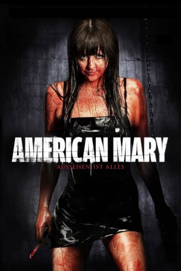

#11717 American Mary
 gesehen am 14.09.2019
gesehen am 14.09.2019
 
 IMDB-Wertung: 6.3 / 10
IMDB-Wertung: 6.3 / 10  Metascore: 46
Metascore: 46 
Die junge Medizinstudentin Mary hat Probleme ihr Studium zu finanzieren. Und dem nicht genug, legen ihre scheinbar vorbildlichen Professoren Ihr mehr als nur einen Stein in den Weg. Ein nächtliches „Bewerbungsgespräch“ in einem Stripclub bringt zwar nicht den erhofften Strip Job aber es ergibt sich eine neue Möglichkeit an Geld zu kommen. Mary entdeckt die blutige Welt der Untergrund Operationen und eine etwas andere Karriere voll extravaganter Patienten beginnt.
Jahr: 2012
Dauer: 102 Minuten
FSK: 18
Land: Kanada Studio: Universal PicturesTonspuren: DTS - ,
Untertitel: Deutsch, Englisch,
Auflösung: 1080p (1920x800) Größe: 5416 MB
Genre: Horror, Drama
Regisseur: Jen Soska, Sylvia Soska
Drehbuch: Jen Soska, Sylvia Soska
Soundtrack: Peter Allen
Darsteller:
 Katharine Isabelle als Mary Mason
Katharine Isabelle als Mary Mason Antonio Cupo als Billy Barker
Antonio Cupo als Billy Barker- Tristan Risk als Beatress Johnson
- Paula Lindberg als Ruby Realgirl
 Clay St. Thomas als Dr. Walsh
Clay St. Thomas als Dr. Walsh John Emmet Tracy als Detective Dolor
John Emmet Tracy als Detective Dolor- Twan Holliday als Lance Delgreggo
 Nelson Wong als Dr. Black
Nelson Wong als Dr. Black- Sylvia Soska als Twin #1
- Jen Soska als Twin #2
 Paul Anthony als Rat
Paul Anthony als Rat- Travis Watters als Mr. Realgirl
- Russ Foxx als Penis Guy
 Julia Maxwell als Tessa
Julia Maxwell als Tessa- Connor Stanhope als Child #1
- Brenda Anderson als Nana
 David Lovgren als Dr. Grant
David Lovgren als Dr. Grant- Sean Amsing als Security Guard
- Marius Soska als Dr. Janusz
- Natasha Forry als Lola
- Rikki Gagne als Young Blonde
- Amus Osaurus als Dru
- Garrett Girad als Henrik
- Sophie McMullin als Dancer
- Anne Openshaw als Mother
- Sierra Pitkin als Child #2
- Agnes Soska als Female Officer
- John Parlett als Pervert Bar Patron (uncredited)
Datei: X:\FSK18-2012\American Mary (2012, FSK18, 1920x800).mkv seit 14.09.2019
Festplatte: FSK18
 Es gibt insgesamt 26 Filme in der Gruppe 'FSK18-2012'
Es gibt insgesamt 26 Filme in der Gruppe 'FSK18-2012'